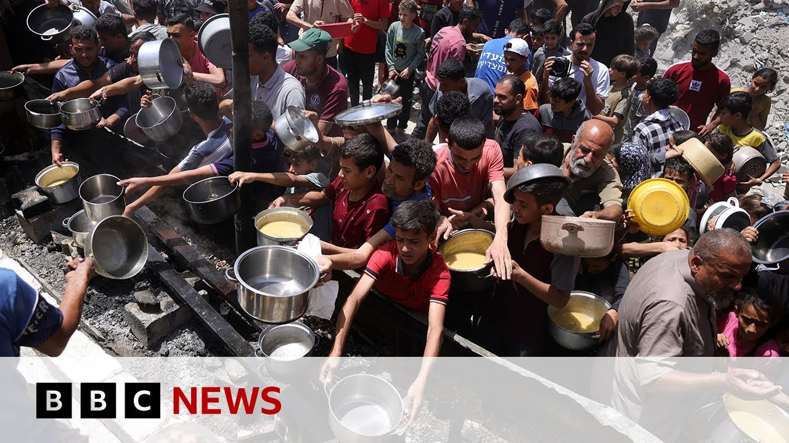

【联合国警告加沙援助“远远不够” | BBC新闻】
Summary: The UN warns that current aid to Gaza is insufficient, with 130 trucks entering this week after Israel eased an 11-week blockade. Starvation-related deaths rise as Israel denies food shortages, while the UN estimates 600 daily trucks are needed. Tensions escalate as Netanyahu criticizes allies like the UK, France, and Canada for condemning Israel's military actions. Aid distribution faces chaos, with looting and attacks hindering deliveries.
摘要： 联合国警告当前对加沙的援助不足，以色列放宽11周封锁后，本周有130辆卡车进入。饥饿相关死亡人数上升，以色列否认食物短缺，而联合国估计每天需要600辆卡车。内塔尼亚胡批评英国、法国和加拿大等盟友谴责以色列军事行动，局势紧张。援助分发陷入混乱，抢劫和袭击阻碍了运送。

⏱️ Estimated Reading Time: 17 min
Now, uh, let's turn to the situation in the Middle East, and about 130 lorries carrying humanitarian aid have crossed into Gaza this week after Israel eased an 11-week blockade.
现在，呃，让我们转向中东局势，以色列放宽11周封锁后，本周约有130辆载有人道主义援助的卡车进入加沙。
The UN's World Food Program says it's now a race against time to stop widespread starvation.
联合国世界粮食计划署表示，现在是与时间赛跑，以阻止广泛的饥饿。
The Palestinian Health Ministry says 29 people have died in Gaza of starvation-related deaths this week, but Israeli officials say there is no food shortage in Gaza at this time.
巴勒斯坦卫生部表示，本周加沙有29人死于饥饿相关原因，但以色列官员称目前加沙没有食物短缺。
Israel says about a 100 aid trucks entered the Gaza Strip yesterday.
以色列称昨天约有100辆援助卡车进入加沙地带。
Before the war, about 500 lorries a day went into Gaza bringing food, medicines, baby food, and medical equipment.
战前，每天约有500辆卡车进入加沙，运送食物、药品、婴儿食品和医疗设备。
That number dropped sharply when the war started.
战争开始后，这一数字急剧下降。
Now UN bodies estimate 600 trucks a day are required to begin to tackle Gaza's humanitarian crisis.
现在联合国机构估计每天需要600辆卡车才能开始解决加沙的人道主义危机。
Let me just tell you that we are expecting the UN Secretary-General Antonio Guterres to give an update on the humanitarian situation in Gaza uh pretty shortly.
让我告诉你们，我们预计联合国秘书长安东尼奥·古特雷斯将很快提供关于加沙人道主义局势的最新消息。
We think that's going to be getting underway uh in New York and we're going to bring that to you live as soon as he begins speaking.
我们认为这将在纽约开始，一旦他开始讲话，我们将为您直播。
Meanwhile, Israel's prime minister has accused the UK Prime Minister Keir Starmer of in effect supporting Hamas.
与此同时，以色列总理指责英国首相基尔·斯塔默实际上支持哈马斯。
It's after he joined the French and Canadian leaders in condemning Israel's expanded military operation in Gaza.
此前他加入法国和加拿大领导人的行列，谴责以色列在加沙扩大军事行动。
I say to President Macron, Prime Minister Trudeau, and Prime Minister Starmer, when mass murderers, rapists, baby killers, and kidnappers, thank you.
我对马克龙总统、特鲁多总理和斯塔默总理说，当大规模杀人犯、强奸犯、杀害婴儿者和绑架者，谢谢你们。
You're on the wrong side of justice.
你们站在了正义的错误一边。
You're on the wrong side of humanity.
你们站在了人性的错误一边。
Benjamin Netanyahu there.
本杰明·内塔尼亚胡如是说。
Well, let's speak now to our correspondent, Wyre Davis, who's in Jerusalem.
现在让我们与在耶路撒冷的记者怀尔·戴维斯交谈。
Uh, Wyre, hello to you.
呃，怀尔，你好。
Benjamin Netanyahu's criticism of Sir Keir Starmer has been described as uh blistering.
本杰明·内塔尼亚胡对基尔·斯塔默爵士的批评被描述为呃激烈的。
Of course, Keir Starmer has also uh condemned the killing of that young Jewish couple in uh Washington DC as well.
当然，基尔·斯塔默也呃谴责了华盛顿特区那对年轻犹太夫妇被杀事件。
Why do you think uh the Israeli prime minister is responding in this way to the UK leader, the UK traditionally being one of Israel's allies?
你认为呃以色列总理为何以这种方式回应英国领导人，英国传统上是以色列的盟友之一？
That's because the United Kingdom, France, and Canada, who Mr. Netanyahu grouped together, have been robust in recent days about their criticism of Israel's decision to expand the war in Gaza and the impact of the war and of course the lack of food and medical equipment on the humanitarian situation in Gaza.
这是因为内塔尼亚胡先生将英国、法国和加拿大归为一类，这些国家近日强烈批评以色列决定扩大加沙战争及其影响，当然还有食物和医疗设备短缺对加沙人道主义局势的影响。
And that that line that Mr. Netanyahu used there, do not be on the wrong side of history.
内塔尼亚胡先生使用的那句话，不要站在历史的错误一边。
that was echoing the British foreign secretary David Lammy when he criticized Israel quite strongly in the House of Commons earlier this week and used that phrase warning to Israel not to be on the wrong side of history.
这是在呼应英国外交大臣戴维·拉米本周早些时候在下议院强烈批评以色列时使用的这句话，警告以色列不要站在历史的错误一边。
So yes, three of Israel's traditional allies, the French, the British and the Canadians coming under strong criticism from the Israeli prime minister.
是的，以色列的三个传统盟友，法国、英国和加拿大，正受到以色列总理的强烈批评。
But you know, Israel has been backed into a corner uh by many of its international allies because and Israel risks, I think, becoming increasingly isolated internationally.
但你知道，以色列被许多国际盟友逼入角落，我认为以色列在国际上可能越来越孤立。
There's been criticism too from the US perhaps not in the same words but the Americans the President Joe Biden and foreign secretary Antony Blinken have both in recent days expressed concern certainly about the humanitarian situation in Gaza.
美国也有批评，或许措辞不同，但美国总统乔·拜登和国务卿安东尼·布林肯近日都对加沙的人道主义局势表示关切。
So that perhaps is what preempted Mr. Netanyahu's extraordinary words.
这或许就是内塔尼亚胡先生发表激烈言论的原因。
We've had a response from the French uh a French government spokesperson Sophie Primis said we do not accept the accusation and added that President Macron's response was very firm.
我们得到了法国的回应，呃法国政府发言人索菲·普里米斯表示我们不接受这一指控，并补充说马克龙总统的回应非常坚定。
So yes, some pretty tense relations between the Israelis and some of their traditional allies.
是的，以色列与其一些传统盟友之间的关系相当紧张。
And we're bring us up to date on what you're hearing about the distribution of aid in Gaza because we have heard about some pretty chaotic scenes around that aid.
请告诉我们你听到的关于加沙援助分发的最新情况，因为我们听说援助周围出现了一些相当混乱的场景。
Yeah.
是的。
Well, look, it is, as I was saying, the humanitarian crisis is one of the reasons for the criticism of Israel.
正如我所说，人道主义危机是对以色列批评的原因之一。
Israel has now relented and allowed some trucks into Gaza in recent days through a crossing in the south of Gaza, not in the north where aid agencies would like it to come in.
以色列现已让步，近日允许一些卡车通过加沙南部的一个过境点进入加沙，而不是援助机构希望进入的北部。
But at that Kerem Shalom crossing, I've been there a couple of times in recent days, some trucks are getting across with very basic food aid with flour.
但在凯雷姆沙洛姆过境点，我近日去过几次，一些卡车运载着面粉等非常基本的食物援助通过。
problem is when it once it gets to the other side because of the scarcity of food because of the uncertainty about how much is getting on that aid is subject to um attacks uh and looting and world food program have told us that of the 90 or so trucks that went in yesterday at least 15 were attacked by armed gangs and looted.
问题是一旦援助到达另一边，由于食物短缺和不确定有多少援助能到达，这些援助会遭到呃袭击和抢劫，世界粮食计划署告诉我们，昨天进入的约90辆卡车中至少有15辆遭到武装团伙袭击和抢劫。
Um what we understand is that then Hamas uh policemen or armed Hamas guards then tried to accompany that aid to its destination.
呃我们了解到，哈马斯呃警察或武装哈马斯警卫随后试图护送这些援助到达目的地。
Israel as it had warned then apparently subsequently attacked some of those armed Hamas fighters.
以色列如其所警告的那样，显然随后袭击了其中一些武装哈马斯战士。
Israel accuses them of of looting the aid.
以色列指控他们抢劫援助。
Palestinian sources say they were trying to accompany the aid to its final destination.
巴勒斯坦消息人士称他们试图护送援助到达最终目的地。
Several people were killed on the ground and that has meant that some of the drivers on the other side, some of the Palestinian companies driving the aid to its final destination have now stopped doing that because of the danger on the other side.
地面有数人死亡，这意味着另一边的部分司机，一些将援助运送到最终目的地的巴勒斯坦公司现已停止这样做，因为另一边的危险。
It's a very very murky situation.
这是一个非常非常混乱的局面。
It's a very dangerous situation and it means that certainly not as much aid as the UN has intended is getting to its final destination in Gaza.
这是一个非常危险的情况，这意味着联合国计划中的援助肯定没有那么多能到达加沙的最终目的地。
Okay, we're thank you very much for that.
好的，非常感谢你的报道。
Well, let's speak now to Ahmed Broy, media and communications advisor for the Middle East for the Norwegian Refugee Council.
现在让我们与挪威难民理事会中东媒体和传播顾问艾哈迈德·布罗伊交谈。
Ahmed, thank you very much for joining us on BBC News.
艾哈迈德，非常感谢你加入BBC新闻。
I understand uh the Norwegian Refugee Council has around 60 staff in Gaza at the moment.
我了解到呃挪威难民理事会目前在加沙约有60名工作人员。
What uh are they able to do? What can they do there right now?
他们呃能做什么？他们现在在那里能做什么？
uh not much at the moment except for uh very critical life-saving support such as providing water for people.
呃目前除了呃提供水等非常关键的生命支持外，能做的不多。
Uh we have been even with the full blockade uh provide we have actually provided around 100,000 people with clean drinking water but th those numbers keep going down because of uh the deep shortages in in fuel in particular.
呃即使在全面封锁下，呃我们实际上已为约10万人提供清洁饮用水，但呃由于特别是燃料严重短缺，这些数字不断下降。
We are providing some education support for children.
我们为儿童提供一些教育支持。
We are providing some baby items for children.
我们为儿童提供一些婴儿用品。
But I mean I can tell you this is scratching the surface with the with the you know the scarcity of of of items.
但我可以告诉你，这只是杯水车薪，因为你知道物品的稀缺。
We have enough aid waiting outside the border to fill in to load up to 200 trucks and uh we are waiting for our turn.
我们有足够的援助等待在边境外，可以装满200辆卡车，呃我们正在等待轮到我们。
We hope that um the opening of the aid crossings is going to be sustainable and it's going to be uh it's going to last because you know we have had 81 days of zero aid coming in and you see the results on on the screen.
我们希望呃援助过境点的开放将是可持续的，呃它将持续，因为你知道我们已经81天没有援助进入，你在屏幕上看到了结果。
Uh but but is the Norwegian Refugee Council prepared to work with the Israeli plan to deliver aid?
呃但挪威难民理事会准备好与以色列的援助交付计划合作吗？
My understanding is that you don't agree with with that plan.
我的理解是你们不同意那个计划。
Uh no we don't agree and with us uh almost the entire humanitarian community you've said haven't you sorry to interrupt Ahmed you said that it violates the essence and application of international law and humanitarian principles just set out for us in a bit more detail if you would what precisely you mean by that of course the plan u uh the plan is to install through all or four hubs to distribute aid in Gaza which means that people will have to go uh to to those places in order to receive aid.
呃不，我们不同意，和我们呃几乎整个人道主义界一起，你说过，抱歉打断你，艾哈迈德，你说这违反国际法和人道主义原则的本质和应用，请更详细地解释一下，你具体是什么意思，当然这个计划呃呃计划是通过四个中心在加沙分发援助，这意味着人们将不得不呃去那些地方才能获得援助。
Of course, this is loaded with risks.
当然，这充满风险。
Uh and of course the distribution of these hubs makes it you know very hard for people uh to reach aid.
呃当然这些中心的分布使人们呃很难获得援助。
It means that people will have to walk miles probably before they can get their loaf of bread or or bucket of water.
这意味着人们可能要走几英里才能得到一块面包或一桶水。
It's it's also you know it will coers definitely people to move from one area to another.
这也你知道肯定会迫使人们从一个地区搬到另一个地区。
The other issue is of course what happens on on the road uh and you know our basic you know logic of military being you know uh military purposes overseeing the the the aid delivery is is a big red flag for us.
另一个问题当然是路上会发生什么呃，你知道我们基本的呃逻辑是军事目的监督援助交付对我们来说是一个大红旗。
We can't I mean we have been independent in our provision of aid all this time as a community and we don't want aid to be linked to any political or or military purposes.
我们不能，我是说我们作为一个社区一直以来独立提供援助，我们不希望援助与任何政治或军事目的挂钩。
is you know aid in Gaza has been politicized for so long it's so dangerous to now militarize it really and you know link link whatever you know military aims that Israel has but given but given the conditions the catastrophic conditions that the Norwegian refugee council and other aid agencies are uh telling the world about in Gaza um do you think there is a situation where uh you know principles are one thing but the the need to get aid to people becomes the driving force that you might work with this plan that the Israeli government has put in place in order to get aid to people who need it?
你知道加沙的援助已被政治化这么久，现在将其军事化真的非常危险，你知道将援助与以色列的任何军事目标挂钩，但鉴于挪威难民理事会和其他援助机构向世界报告的加沙灾难性条件呃，你认为是否存在一种情况，呃你知道原则是一回事，但将援助送到人们手中的需求成为驱动力，你可能与以色列政府制定的这个计划合作，以便将援助送到需要的人手中？
No, I don't think so.
不，我不这么认为。
And the reason why is because there's tons of aid that in in the existing mechanism has worked and you see it has worked in the ceasefire when Israel, you know, hands off.
原因是在现有机制下已有大量援助奏效，你看在停火期间以色列放手时它是有效的。
It opened the gates.
它打开了大门。
It let people, you know, receive aid wherever they are.
它让人们，你知道，无论在哪里都能接收援助。
This plan that Israel is is is now devising exposes people.
以色列现在设计的这个计划使人们暴露在危险中。
It exposes people to screening.
它使人们面临筛查。
It exposes people to dangers of you know whatever transport methods they are using.
它使人们面临他们使用的任何运输方式的危险。
I mean people that can't even afford a donkey card in Gaza.
我是说在加沙连驴车都负担不起的人。
How they going to walk on foot for for miles?
他们如何步行几英里？
I mean what are going to face on on the road?
我是说他们在路上会面临什么？
So for us really frankly it's it's a non-starter and we have our mechanisms stringent uh principles uh stringent I would say rules that we operate with and Israel knows where this aid is heading.
所以对我们来说坦率地说这是行不通的，我们有严格的呃原则呃严格的我会说我们运作的规则，以色列知道这些援助的去向。
There's coordination that happens with with the UN.
与联合国有协调。
So I think this is distracting us from from doing our job which is to save lives and give to people who really need that aid.
所以我认为这分散了我们拯救生命和帮助真正需要援助的人的注意力。
And you know these tactics should stop.
你知道这些策略应该停止。
Actually this you know this story I think distracts from from the fact that our people are hungry and there's so much food waiting across the border.
实际上这个你知道这个故事我认为分散了人们对我们的人民在挨饿而边境那边有这么多食物等待的注意力。
Okay.
好的。
Ahmed Bum from the Norwegian Refugee Council.
挪威难民理事会的艾哈迈德·布姆。
Thank you very much for joining us on BBC News today.
非常感谢你今天加入BBC新闻。
Thank you.
谢谢。